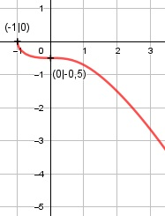

Aufgabe 133 f(x) = -0,5 * f(x) = -0,5 * (x3 + 1)0,5 Kettenregel erste Ableitung: f'(x) = -0,5 * 0,5 * 3x2 * (x3 + 1)-0,5 f'(x) = -0,75x2 * (x3 + 1)-0,5 Produktregel zweite Ableitung: u = -0,75x2, u' = -1,5x v = (x3 + 1)-0,5 Kettenregel: v' = -0,5 * 3x2 * (x3 + 1)-1,5 v' = -1,5x2 * (x3 + 1)-1,5 f''(x) = -1,5x* (x3 + 1)-1,5 + + (-1,5x2) * (x3 + 1)-1,5 * (- 0,75x2) f''(x) = -1,5x*(x3+1)-1,5 + 1,125x4*(x3+1)-1,5 -1,5x 1,125x4 f''(x) = -------------- + -------------- (x3 + 1)0,5 (x3 + 1)1,5 -1 1,125x4 f''(x) = ------------ * (1,5x - -----------) (x3 + 1)0,5 (x3 + 1) -1 1,5x4 + 1,5x - 1,125x4 f''(x) = ------------ * ------------------------ (x3 + 1)0,5 (x3 + 1) -0,375x4 - 1,5x f''(x) = ------------------- (x3 + 1)1,5 Zur Beurteilung, ob f'''(x) ≠ 0: (Begründung siehe Aufgabe 105) u = -0,375x4 - 1,5x, u' = -1,5x3 - 1,5 u' -1,5x3 - 1,5 f'''(x) = --- = ---------------- v (x3 + 1)1.5 ≠ 0 für alle x > -1 x3 + 1 muss ≥ 0 sein x3 + 1 ≥ 0 |-1 x3 ≥ -1 | x ≥ -1 Definitionsbereich: -1 ≤ x < ∞ wenn x = -1 , dann ist = 0 und -0,5 * am größten Wertebereich: -∞ < f(x) ≤ 0 Symmetrie: f(-x) = -0,5 * f(-x) = -0,5 * ≠ f(x) --> keine Achsensymmetrie -f(-x) = -(-0,5 * ) -f(-x) = 0,5 * ≠ f(x) --> keine Punktsymmetrie Nullstellen: f(x) = 0 -0,5 * = 0 |:(-0,5) = 0 |2 x3 + 1 = 0 | -1 x3 = -1 | x = -1 N(-1|0) Schnittpunkt mit der y-Achse: x = 0 f(0) = -0,5 * = -0,5 Sy(0|-0,5) Extrempunkte: f'(x) = 0 -0,75x2 = 0 |:(-0,75x2) x2 = 0 |ⱱ x1,2 = 0 f(0) = -0,5 * = -0,5 f''(0) = -0,375 * 02 - 1,5 * 0 = 0 f'''(x) ≠ 0 für alle x > -1 --> Sattelpunkt Wendepunkte: f''(x) = 0 -0,375x4 - 1,5x = 0 -0,375x * (x3 + 4) = 0 -0,375x = 0 |:(-0,375) x = 0, f(0) = -0,5 WP(0|-0,5) x3 + 4 = 0 |-4 x3 = -4 | x = -1,59 --> außerhalb des Definitionsbereiches Graph:
